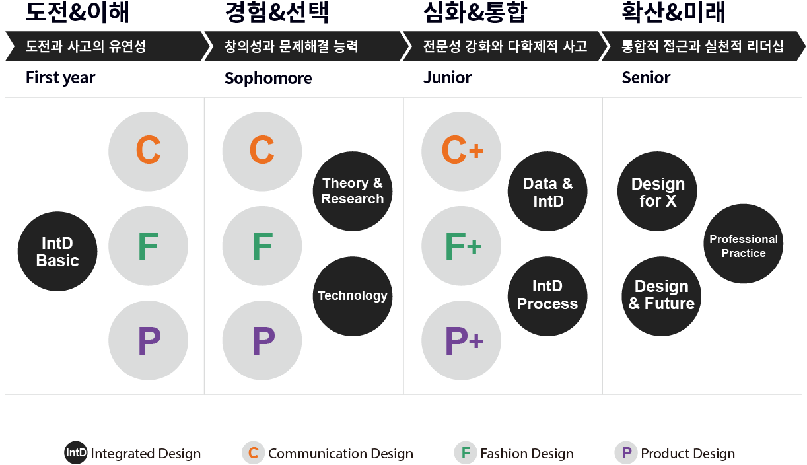
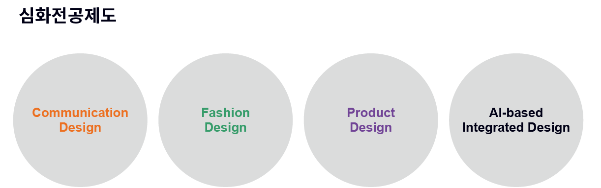
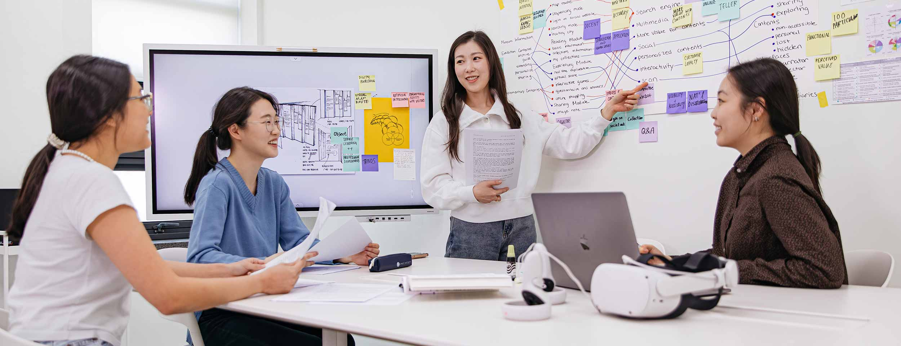
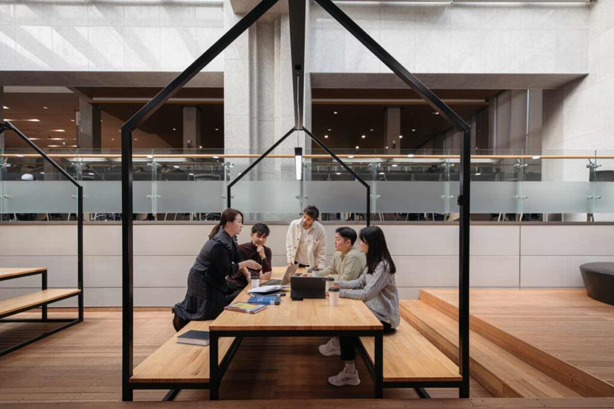

패션디자인연구실
디지털 패션, 패션디자인, 패션일러스트레이션, 디자인 트렌드
통합디자인학과의 학부과정은 커뮤니케이션디자인(C), 패션디자인(F), 제품디자인(P)으로 구성된 디자인 전문 분야와 각 세부분야 간의 통합을 기반으로 뉴미디어와 테크놀로지, 서비스/시스템디자인, 디자인 경영, 디자인혁신 등으로 확장되는 차별적 통합디자인 교육시스템을 갖추고 있습니다.
통합디자인학과의 교과과정은 1학년에 통합디자인 개념의 이해, 디자인 기초 조형 원리 및 매체의 탐색을 통해 디자인 전문가가 갖추어야할 도전정신과 사고의 유연성을 기르는 것을 시작으로, 2학년에는 통합적 이론과 디자인리서치, 그리고 테크놀러지의 학습과 함께 세부 디자인 영역을 탐색하고 경험하면서 통합적 디자인의 범주에서 개인이 초점을 맞출 세부 디자인 영역을 선택하고 설계할 수 있도록 합니다. 또한, 3학년에는 학생이 선택한 세부 디자인 영역의 전문성을 강화하면서 이를 기반으로 보다 통합적 인재로 성장할 수 있는 통합디자인 프로세스 및 방법론을 경험하는 교과목으로 구성되어 있습니다. 4학년에는 심화된 디자인 역량과 통합적 디자인 접근법을 활용해 창의적이고 혁신적인 디자인 해결책을 찾고 제시하는 프로젝트형 교육과, 졸업 후 창업 및 관련 산업 진입에 필요한 실무 교과목을 통해 실천적 리더쉽을 갖춘 통합적 디자인 인재로 성장할 수 있도록 설계 되었습니다.
또한, 통합디자인학과는 통합적이고 융합적인 역량외에도, 학생들이 디자인 세부 분야의 전문성을 갖출 수 있는 커뮤니케이션디자인, 패션디자인, 제품디자인, AI기반통합디자인의 심화전공제도 운영을 통해, 학생 맞춤형의 다양한 교육 기회를 제공하는 시스템을 갖추고 있습니다.


인간을 중심으로 전개되는 디자인학문의 폭넓은 이해를 위하여 디자인의 기초이론 및 다양한 디자인 영역별 특성 및 현대디자인의 흐름을 학습한다.
인체와 사물의 관찰을 통한 대상의 특성을 분석하고 이를 시각적으로 표현하며, 다양한 조형 활동을 통해 대상을 해석하는 기초 능력을 함양한다.
2D 그래픽 툴(일러스트레이터, 포토샵, 인디자인 등)을 이용하여 다양한 표현기법 및 디자인 방법을 탐색하고 실험하는 것을 목표로 하며, 프로젝트를 진행을 통해 실제 디자인 작업에 적용하는 능력을 개발한다.
전통적, 실험적 디자인 소재를 탐색하고, 다양한 소재를 활용한 조형 활동을 통해 디자인 조형의 기초적 접근 방법을 학습한다. 조형 요소 및 구성 원리를토대로 2차원과 3차원을넘나들며 조형 작업의 폭을 넓힐 수있는 다양한 프로젝트를 수행한다.
20세기 현대 디자인을 역사적으로 조명하고 각 디자인 분야의 사례를 통하여 사회문화적 환경의 변화와 디자인의 관계성 및 의미를 탐구한다.
색채이론과 실습을 통하여 색채의 특성을 이해하고 색채감성을 습득함으로써 다양한 디자인 분야에서 색채를 효과적으로 활용할 수 있는 능력을 키우며 색채를 통해 표현된 문화적 상상력을 탐구한다.
아이디어를 도출하고 발전시켜 상품화에 이르는 디자인 기획의 과정과 방법들을 이해하고, 이를 바탕으로 프로젝트를 진행하여, 통합 디자이너로서 필요한 혁신적 디자인 기획 능력을 배양한다.
미래의 디자인과 서비스는 점차 통합화, 비물질화 되어가고 있으며, 무형의 형태로 존재하는 사람과 환경의 다양한 상호작용, 그 리고 그것이 만들어 내는 서비스는 새로운 디자인의 대상이 되고 있다. 이러한 환경변화에 대한 이해를 바탕으로, 사용자와 상호 작용이 가능한 제품 및 서비스를 기획하여 구체화하고 제작할 수 있는 능력을 기른다.
시대적 특성 및 사회적 문화적 배경에 따라 형성되는 미 개념에 관한 강의를 통해 디자인을 이해하고 평가하는 능력을 기른다.
다양한 디자인 관련 의사 결정에 이루어질 수 있는 데이터 수집, 처리, 시각화 방법을 실습해보고 이를 바탕으로 제품, 패션, 커 뮤니케이션 디자인 등 다양한 영역의 새로운 디자인 및 마케팅, 서비스 등을 기획하는 데에 활용해 본다.
사진, 비디오, 컴퓨터와 같은 영상매체로 표현되는 이미지, 동영상, 애니메이션, 컴퓨터 애니메이션 등의 다양한 영상디자인의 기본 원리와 지식을 습득하고 이를 다양한 매체로 응용하는 표현방법을 실습 프로젝트를 통해 탐구하는 등 2차원과 3차원 조형에 시간의 차원을 더한 영상조형 즉 4차원 조형형성 능력을 배양한다.
정치ᆞ경제, 사회ᆞ문화의 변천에 따른 시대의 패러다임과 메가트렌드를 탐구하고, 소비트렌드, 라이프스타일의 변화와 다양한 디자인 영역과의 관련성을 분석하여 미래의 디자인 트렌드를 예측하고 기획한다.
통합디자인의 기본 개념과 적용 방안 이해를 바탕으로, 통합적 관점에서의 디자인 프로젝트를 기획하고, 이를 바탕으로 제품, 패션, 커뮤니케이션 디자인 등 다양한 영역의 디자인 및 마케팅, 서비스 등을 설계한다.
인간과 사물 사이의 관계를 이해하고, 서로 소통이 가능하게 하는 인터페이스 디자인을 이해하고, 다양한 제품, 시스템에 응용하고 실습한다.
X로 지칭되는 오픈된 토픽에 대하여 통합적 접근을 통해 창의적이고 혁신적인 문제해결 방법을 모색하는 것을 목표로, 디자인사 고를 기반한 통합적 디자인 프로세스를 경험해본다.
X로 지칭되는 오픈된 토픽에 대하여 통합적 접근을 통해 창의적이고 혁신적인 문제해결 방법을 모색하는 것을 목표로, 디자인사 고를 기반한 통합적 디자인 프로세스를 경험해본다.
X로 지칭되는 오픈된 토픽에 대하여 통합적 접근을 통해 창의적이고 혁신적인 문제해결 방법을 모색하는 것을 목표로, 디자인사 고를 기반한 통합적 디자인 프로세스를 경험해본다.
디자인 리더로 성장할 수 있도록 디자인 관점에서 비즈니스 모델을 수립하는 방법을 비즈니스 환경 전반에 대한 이해, 디자인경영 이론, 디자인 사고, 전사적 맥락 분석과 심층 소비자 연구를 바탕으로 새로운 비즈니스 기회와 독특한 소비자 경험 전략을 포착 및 창출 방법의 등의 학습을 통해 탐구한다.
통합디자인적 마케팅 활동인 V.M.D.의 목적 및 프로세스를 이해하고 상품기획 및 판매 전략에 따른 상업공간에서의 V.M.D.요소를 기획, 실습한다.
포트폴리오의 완성도를 높이고, 프레젠테이션 기법 학습 및 실무 현황 탐색 등을 통해 실무 진출을 위한 준비를 하는 것을 목표로 한다.
점, 선, 면, 형태, 질감, 색채 등 디자인의 요소와, 통일, 대비, 리듬, 균형 등 구성의 원리를 탐구하고, 실습 프로젝트를 통하여 다양한 매체에서의 시각 커뮤니케이션을 위한 메시지 표현방법과 이에 따른 기초 커뮤니케이션 능력을 배양한다.
커뮤니케이션 도구인 문자의 조형과 기능에 대한 이론적 학습을 바탕으로, 정보와 이미지의 성격에 따라 변화하는 타이포그래피의 기능을 이해하고, 정보표현수단으로서의 타이포그래피를 다양한 시각전달 매체에 활용하기 위한 디자인을 실습한다.
브랜드의 이론 및 실습을 통해 종합적 브랜드 디자인을 배우고, 실제 사회적 니즈의 조사에 기반한 새로운 브랜드의 기획과 정확한 브랜드 커뮤니케이션을 위한 아이덴티티 디자인 및 미디어를 활용한 커뮤니케이션 디자인을 배운다.
커뮤니케이션디자인 분야의 전공심화 교과목이다. 본 교과목에서는 시각이미지통합을 위한 디자인 프로젝트를 자유롭게 수행하며, 졸업 후 진로를 위한 포트폴리오를 준비한다.
인체의 비례 및 소재의 특성에 따른 패션 일러스트레이션의 다양한 표현기법을 학습한다. 다양한 매체활용을 토대로 패션디자인 및 패션이미지의 특성에 따른 창의적인 표현방법을 실습한다.
패션디자인의 기초 이론과 디자인 발상에서부터 패턴 메이킹, 원단, 부자재의 선정 및 의복 제작에 필요한 기법을 탐구하고, 창의적인 패션디자인을 개발하고 제작하는 과정을 통하여 패션디자이너가 갖추어야 할 기초능력을 함양한다.
디지털패션커뮤니케이션 교과목은 현대 패션 산업에서 디지털 기술과 커뮤니케이션의 결합을 통해 패션브랜드의 홍보 및 커뮤니 케이션 컨텐츠 개발을 위한 패션 브랜드 커뮤니케이션의 이론과 주요 미디어 및 디지털 플랫폼의 특성과 활용 전략을 학습하고, 패션 브랜드의 커뮤니케이션을 위한 실무 전략을 기획 및 적용하는 기회를 제공한다.
심화된 패션디자인 방법론을 배우고, 창의적 패션디자인 개발 및 패션디자인의 발산적 방법을 실습한다. 이를 토대로, 차별적인 패션디자인 컨셉을 기획하고 자신만의 디자인 컬렉션을 구성, 발전시킬 수 있도록 한다.
디지털 패션디자인 역량 강화를 위해, 가상성 기반 디지털 툴(Virtual Fitting System)을 이용한 다양한 패턴디자인 방법과 패션디자인 개발 방법을 학습함. 창의적 패턴디자인을 통한 디지털 패션디자인 분야의 기초 지식을 습득한다.
제품 디자인의 원리와 조형 요소, 그리고 사용자에 대한 이해를 바탕으로, 다양한 제품을 기획 및 디자인하고 제작하는 과정을 통하여 제품 디자인의 기초 기술들을 연마한다.
디지털 환경에서 제품을 설계하는 과정 및 방법과 프로토타이핑하는 기술을 배우기 위한 프로젝트 중심의 교육으로 3D CAD, 프로토타이핑 기술을 활용하는 능력을 기른다.
제품 기획에서 상품화에 이르는 디자인 프로세스의 이해를 바탕으로, 창의적이고 실험적 개념의 제품을 기획하고 디자인하여 상 품화할 수 있는 능력과 실행 기술을 연마한다.
제품디자인 프로젝트 기획부터 양산 과정까지의 과정을 다룬다. 학생들은 제품 설계, 디자인 목업 제작, 양산성 검토, 지속가능성 검토 및 제품 디자인 디테일 과정을 거치면서 실무레벨의 프로젝트를 경험한다.
4차 산업시대에서 디자인의 영역이 사회, 문화, 정치적인 ‘사악한’문제로 확장됨에 따라, 미래 시나리오, 비판적 디자인, 디자인 픽션, 미래예측 디자인 등의 다양한 디자인 방법론을 학습한다. 이를 통해 현재의 기술과 문화적 흐름을 기반으로 미래를 예측하는 것뿐만 아니라, 이러한 흐름에 변화를 일으키고 새로운 방향을 제시하는 디자이너를 양성한다.

통합디자인학과 대학원은 인간중심의 통합적 디자인 관점을 기반으로 빠르게 변화하는 디자인 지식의 생산과 확산에 기여할 수 있는 인재 양성을 목표로 합니다. 본 과정의 학생들은 다양한 심화 교과, 통합분야의 교과를 학습하고 연구 프로그램에 참여함으로써 기존 디자인 학문과 연구의 패러다임을 넘어서는 새로운 디자인 영역의 가능성에 대해 탐구하고 독자적인 연구자로서 성장할 수 있습니다.
통합디자인학과 대학원의 교과과정은 커뮤니케이션디자인, 패션디자인, 제품/서비스디자인, 디지털디자인, 그리고 인간생애와혁신적디자인의 세부 전공을 심화하면서 통합분야 교과와 연구를 통해 인간 중심의 통합적 디자인 접근에 대한 이해를 높이고 영역을 넘나드는 융합적 인재로 성장할 수 있도록 설계되어 있습니다.
통합디자인학과 대학원 과정은 차별화된 교육프로그램의 제공 외에도, 학술연구와 발표, 연구역량을 배양할 수 있는 세미나, 다양한 정부 및 기업 등과의 협업 프로젝트도 활발하게 이루어지고 있어, 전문 연구자로서 성장할 수 있는 다양한 기회를 제공하고 있습니다.


디자인 실무 및 디자인학 연구의 최근 이슈와 동향을 파악하여 통합디자인의 관점에서 연구/프로젝트를 진행한다.
디자인 연구방법론을 논하고 실제 생활디자인 연구사례들에서 사용된 방법에 대해 토의, 비평한다.
디자인 연구방법론을 논하고 실제 통합디자인 연구사례들에서 사용된 방법에 대해 토의, 비평한다.
정성적으로 판단, 평가하는 인간의 감성을 정량화시켜 공학적 기법을 이용하여 디자인 작업에 이용하고자 하는 것으로 감성공학이 무엇이며 디자인 작업에서 어떻게 이용하는가를 이해하며 학습한다.
디자인산업의 발전방안과 국가적 경쟁력을 기르기 위한 방안을 경영학적 관점에서 강의하고 연구한다.
다양한 디자인 분야에서 외현적으로 표출되는 형태적 특성을 의미있는 기호로서 파악하는 기호학 이론을 강의하고 실제 사례를 탐구하여 실증적으로 연구한다.
디자인적 관점에서 소비자의 욕구를 철저히 조사, 탐지하여 그것을 신제품개발에 반영시켜 소비자가 원하는 상품을 시장에 제공하고 판매촉진을 일으켜 소비자의 만족을 통하여 기업의 이윤추구를 위한 기업활동이다. 이는 시장의 변화로 마케팅 개념이 세분화된 것으로 디자인마케팅의 개념과 방법을 연구한다.
지역적 문화 정체성을 담고 있는 디자인의 상징적 의미를 탐구한다.
생활을 해석하고 재창조하는 문화로서의 디자인의 중요성과 역할에 대하여 강의하고 연구한다.
철학적, 문화적 이론을 배경으로 한 미적 개념을 연구하고 창의적 조형활동을 위한 이론적 강의를 한다.
디자인의 방법에 대하여 연구하고 창조적 디자인 개발과 디자인 프로세스의 학습을 한다.
메가 트랜드, 라이프 스타일과 관련된 트랜드를 조사 분석하고 이를 토대로 특정한 주제 하에 기획실습한다.
저작권법, 문예진흥법, 환경조형물설치법, 판매와 유통에 관한 법, 미술관 관련 법 등 디자인에 관련된 각종 법에 대한 연구를 한다.
기업, 사회적 혁신을 위한 디자인리더쉽의 의미와 역할을
연구한다.
소비자가 원하는 상품이나 서비스를 제공하기 위한 머천다이징을 판매현장에서 시각화하는데 필요한 이론과 사례를 강의한다.
인간생애 특성에 따른 서비스디자인을 현장 인턴쉽과 연계하여 습득한다.
문화적, 역사적 변천에 따른 색채의 특성과 적용에 대해 논의하고 이를 토대로 특정 주제와 관련하여 연구한다.
조형예술에 대한 이론들을 작품의 사례연구를 통하여 철학적, 미학적, 사회학적 측면으로 연구, 조명한다.
모더니즘 이후의 디자인 사조를 분석하고 시대별 사회문화적 특성과 분야별 디자인 특성의 상호작용과 변화요인을 고찰하고 연구한다.
브랜드디자인은 기업이나 국가 단체 개인 등의 타와 구별되는 해당 단체 및 개인 만의 개성과 특성을 기획, 조직하고 표현하는 디자인이다. 브랜드는 기업의 경영구조 및 이를 아우르는 사회전반의 트렌드 변화에 대응하여 끊임없이 변화하고 있다. 본 교과목에서는 브랜드 디자인의 사례와 연구논문을 조사분석하여 발표와 토론을 통해 고찰하며, 브랜드 디자인에 대한 종합적인 학습을 기반으로 디자인프로젝트와 디자인연구를 수행을 통해 아이덴티티 디자인 전문가로서의 능력을 배양한다.
디자인학의 연구 분야 중 커뮤니케이션디자인 관련 연구를 진행한다. 이를 위하여 우수연구논문의 심층리뷰를 학습하며 본인의 연구이슈를 발견하고, 이에 맞는 연구설계와 연구방법을 설계하여 실제적 연구를 진행한다. 이러한 학습의 과정을 통해 커뮤니케이션디자인 분야의 학문적 연구자로서의 능력을 배양한다.
이미지와 언어에서는 정보의 정확한 전달을 위해 언어의 기능을 하는 이미지에 대한 분석연구를 한다. 또한 다양한 미디어의 발달에 발 맞추어 시각 뿐만이 5감을 통한 통감각적 정보에 대한 분석적인 연구를 통해서 객관화된 감각언어의 표현방법을 연구하며, 이미지 언어를 객관화하고 공공화 할 수 있는 방법을 모색한다. 수업에서는 이미지를 형성하고 있는 요소에 대한 분석연구와, 객관화된 정보구성과 전달을 위한 시각언어의 제작을 기획단계부터 디자인 실현의 단계까지 학습하고 실습한다.
아이덴티티 디자인은 기업이나 국가 단체 개인 등의 정체성을 표현하는 디자인이다. 시각을 중심으로 소통하던 아이덴티티 디자인은 다감각으로 소통하며, 다양한 변화에 대응하는 형태로 변화하고 있다. 본 교과목에서는 아이덴티티 디자인의 사례연구와 연구논문의 심층리뷰를 통한 발표와 토론 등, 아이덴티티 디자인에 대한 종합적인 학습을 기반으로 실제 디자인프로젝트의 수행 및 학문적 연구 수행을 통해 아이덴티티 디자인 전문가로서의 능력을 배양한다.
커뮤니케이션 매체로서의 전시디자인 연구를 목표로 한다. 물리적 전시 및 가상 전시의 영역에서 다양한 사례와 함께, 효과적인 커뮤니케이션을 위한 프리젠테이션 전략을 탐구하고 평가한다.
시각정보의 효과적인 전달을 위하여 정보의 구조, 위계, 정보의 시각화와 체계적 전달을 연구한다. 수업에서는 정보디자인의 기본이론 및 개념연구와 사례분석을 통한 실증적 연구를 통해 새로운 정보디자인의 방향모색을 한다. 이러한 학습의 과정을 통해 정보디자인 전문가로서의 능력을 배양한다.
시각정보의 콘텐츠 특성과 사용자 특성, 그리고 전달 매체의 특성에 따라 특화된 시각정보의 표현과 이를 전달하기 위한 기본적인 정보구조와 시각적 체계, 정보표현의 미디어 등 정보의 매체표현과 특화된 전달에 관하여 심화된 연구를 한다. 이러한 학습의 과정을 통해 정보디자인의 전문가로서의 능력을 배양한다.
wayfinding, signage, super graphic 등 물리적 환경 및 가상 환경에 적용된 다양한 그래픽 디자인 사례와 함께 환경그래픽디자인 연구를 목표로 한다.
예술과 패션이 결합되어 재창조되는 개념적, 양식적, 미학적 특성에 대한 연구와 사례 분석을 토대로 디자인을 제작한다.
기술을 통한 패션의 확장가능성을 산업적, 디자인 교육적 인사이트를 위해 탐색하고 연구한다.
패션디자인의 문화적, 미적, 기호학적 상징성과 비교분석의 체계를 학습한다.
패션디자인 프로세스 이론에 대해 학습하고 사회문화기술 변화에 따른 패션디자인프로세스를 다양한 가능성을 연구한다.
패션디자인의 최신 이슈를 중심으로 디자인이론 및 연구 경향을 학습하고 이를 기반으로 패션디자인의 방법론에 적용한다.
시대의 이미지를 분석하고 해석하는 방법론을 학습하고, 현대 패션이미지를 분석한다.
현대 패션일러스트레이션의 이론과 사례연구를 통해 패션일러스트레이션의 관점을 확장하고, 작품을 기획한다.
콜라보레이션의 방법과 사례연구를 통해, 패션 콜라보레이션의 다양한 가능성을 탐색한다.
버추얼패션의 개념과 특성을 이해하고, 패션산업 프로세스의 다양한 밸류체인 단계에서 버추얼패션의 활용 가능성을 모색한다.
시각적 마케팅, 브랜딩, 디지털 미디어, 기호학을 포함한 다양한 패션 커뮤니케이션 방법에 대해 학습한다.
제품디자인 기획, 사용자조사, 디자인, 개발, 평가 등 디자인 프로세스 전 과정을 통합적으로 학습하고 연구한다.
사회문제에 대한 다각적 스펙트럼과 실제 프로젝트를 통해 사회적디자인의 다양한 방법론을 연구한다.
서비스디자인의 기본개념과 방법론을 바탕으로 최근 사회적 이슈와의 연계성을 탐색한다.
인터렉션 디자인의 기본개념을 이해하고, 최근 이슈가 되는 주제를 선정하여 사람들의 삶을 보다 가치 있게 만들 수 있는 인터렉티브 제품, 서비스를 기획하고 기본 디자인을 전개한다.
제품/서비스 기반 디자인 연구에 필요한 지식과 이론적 배경을 탐구하고, 다양한 디자인 연구 방법론과 응용기법들을 체험하고 학습한다. 프로젝트를 통하여 주제선정, 연구방법론 개발, 직접 연구 등을 자율적으로 진행한다.
본 교과목은 행동 교정이론을 바탕으로 개발된 디자인 주도 개입 사례들을 학습하고, 국내 주요 행동적 사회문제 해결을 위한
디자인 개입 방법을 디자인 하고 그 효율성에 대한 연구를 진행한다. 다양한 사례조사와 실습을 통해 변화된 행동의 지속가능성에 대한 연구 프로젝트를 진행한다.
디자인 사고의 배경과 개념을 배우고 기존 사용자 중심 디자인 프로세스의 한계를 이해한다. 더불어 최근 화두가 되고 있는 다양한 디자인 사고 및 접근법을 탐색하고 응용해봄으로써 새로운 디자인 연구 기회를 탐색한다.
한 아이템을 설정한 후 제품디자인 프로세스를 통하여 창의적인 디자인을 창출하고 이를 양산시 많이 활용하고 있는 성형기법으로 제작하여 본다.
제품디자인 기획, 사용자조사, 디자인, 개발, 평가 등 디자인 프로세스 전 과정을 통합적으로 학습하고 연구한다.
변화하는 사용자 인터페이스 디자인과 연관된 다양한 지식, 사례, 이론 등을 통해 사용자 인터페이스 디자인을 연구할 수 있는 다양한 관점을 제시한다.
인공지능, 특히 딥러닝의 이론 및 실습을 통해 디자인적인 응용 가능성에 대해 알아본다.
인터렉션 디자인의 기본개념을 이해하고, 최근 이슈가 되는 주제를 선정하여 사람들의 삶을 보다 가치 있게 만들 수 있는 인터렉티브 제품, 서비스를 기획하고 기본 디자인을 전개한다.
제네러티브디자인 방법, 특히 인공지능에서 발전한 GAN을 활용한 방법을 소개한다. 이론적 기반 및 소프트웨어적 구현을 탐구한다.
제품/서비스 기반 디자인 연구에 필요한 지식과 이론적 배경을 탐구하고, 다양한 디자인 연구 방법론과 응용기법들을 체험하고 학습한다. 프로젝트를 통하여 주제선정, 연구방법론 개발, 직접 연구 등을 자율적으로 진행한다.
기술을 통한 패션의 확장가능성을 산업적, 디자인 교육적 인사이트를 위해 탐색하고 연구한다.
버추얼패션의 개념과 특성을 이해하고, 패션산업 프로세스의 다양한 밸류체인 단계에서 버추얼패션의 활용 가능성을 모색한다.
딥러닝의 기본 이론에 대해 살펴보고 주요 알고리즘을 파이선 언어로 구현해본다.
LLM과 이미지생성형 모델의 이론적 배경 및 API를 살펴보고 실습을 통해 디자인 결과물을 도출해본다.
가족의 생애주기별 서비스를 다루는 수업으로써 가족의 돌봄을 주제로 관련 분야의 이론과 방법론을 학습하고 프로젝트를 진행한다.
(아동가족학과개설과목)
아동의 특성, 가족의 구성에 따른 서비스의 니즈를 이해하고 이를 기반으로 사회의 지속가능성을 지원하는 서비스 디자인을 기획, 연구한다.
사회문제에 대한 다각적 스펙트럼과 실제 프로젝트를 통해 사회적디자인의 다양한 방법론을 연구한다.
본 교과목은 행동 교정이론을 바탕으로 개발된 디자인 주도 개입 사례들을 학습하고, 국내 주요 행동적 사회문제 해결을 위한
디자인 개입 방법을 디자인 하고 그 효율성에 대한 연구를 진행한다. 다양한 사례조사와 실습을 통해 변화된 행동의 지속가능성에 대한 연구 프로젝트를 진행한다.
디지털 패션, 패션디자인, 패션일러스트레이션, 디자인 트렌드

Interaction design, Interface design, Human interaction design

sustainable product-service systems design, service design, UX/UI design, nature-inspired design

Exhibition design, information design, Interface design, environmental graphic, design education

Design for Sustainable Behaviour, Design for Behaviour Change, Sustainable Product Design, Design for Health & Well-being, Feedback Design, Human-Powered Products

Digital fashion design process & methodology (3D Fashion CAD, AR, VR, & 3D Printing), Design cognition & creativity, Fashion collaboration, Future fashion industry & strategy
UX Design, Product Design (IA, UI, Design Systems), Digital Service Design (Mobile, VR/XR, AI), Digital Branding, Inclusive, Wellness & Emotional Design